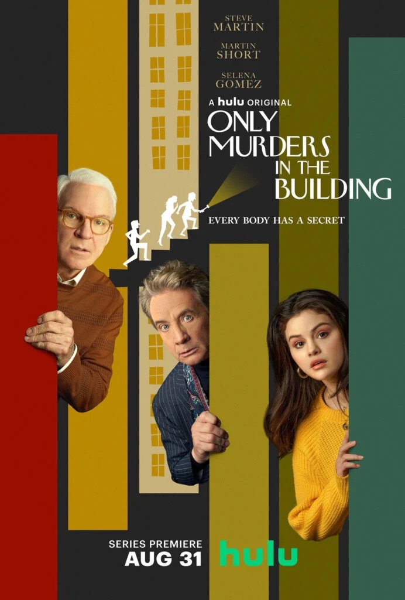
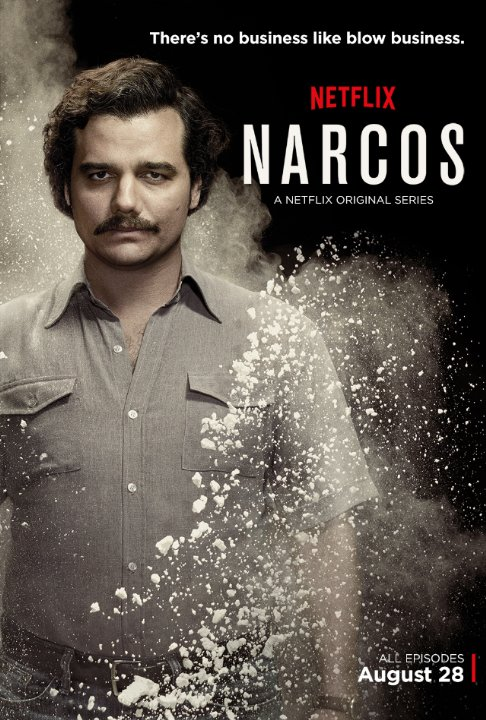

The murder mystery comedy Only Murders In the Building was an instant hit. The series, which follows Selena Gomez, Martin Short, and Steve Martin as their characters try to solve a mysterious death in their Upper West Side apartment building.
Watch
Money Heist (Spanish: La casa de papel, transl. The House of Paper) is a Spanish heist crime drama television web series created by Álex Pina. The series shows two heists that are planned for many days led by Professor (Álvaro Morte). The first heist was at Royal Mint of Spain and the second one at the Bank of Spain.
Watch

Narcos tells the true-life story of the growth and spread of cocaine drug cartels across the globe and attendant efforts of law enforcement to meet them head on in brutal, bloody conflict.
Watch